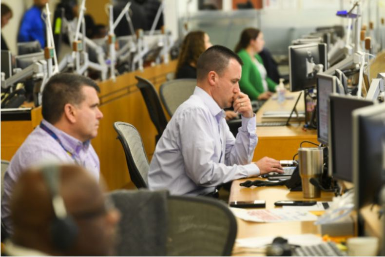

疫苗设计新进展！新冠病毒S蛋白超清结构图绘制成功，但实用疫苗还需要更多时间
原文链接 备份链接 昨日，Science 刊发了美国德克萨斯大学奥斯汀分校 Jason McLellan 团队的一篇关于新冠病毒的最新论文。该团队利用冷冻电镜技术解析出了新冠病毒 S 蛋白的超清结构。这一成果对开发疫苗和抗病毒药物有重要意 …

越来越多的跨国药企开始加入研发新冠病毒疫苗的行列。
本周，法国药企赛诺菲（Sanofi）宣布将与美国卫生和公共服务部（HHS）合作，利用重组 DNA 平台生产疫苗。此前，美国强生（Johnson＆Johnson）也宣布与 HHS 合作研发疫苗。
赛诺菲疫苗全球负责人 David Loew 表示：“我们必须协同合作才能应对全球性的健康威胁，比如最新的冠状病毒。为此，我们与 BARDA（美国生物医学高级研究与开发局）展开合作，加速开发这款潜在候选疫苗。”
辉瑞、默克、葛兰素史克、赛诺菲、强生这几家巨头主宰着全球疫苗产业。目前只有辉瑞和默克两家巨头尚未明确表态。
（来源：Harvard Health）
此前，这些制药巨头并没有对新冠疫苗和药物表现出明显的兴趣。吉利德、艾伯维也只是基于现有药物来进行实验，人们对制药巨头是否愿意投资研制新冠疫苗很不乐观。
倒是一些 NGO 组织表示将通过慈善捐款推动疫苗开发。一家在 2017 年创立的名为 “流行病预防创新联盟” (CEPI) 的组织正在支持 Inovio 和 Moderna 的疫苗开发项目。葛兰素史克同意将其技术提供给 CEPI。
生物技术公司 Moderna 此前宣布将与美国国立卫生研究院合作，利用 mRNA 技术开发疫苗。
但美国国家过敏和传染病研究所所长安东尼 · 富奇（Anthony Fauci）对此并不看好，他认为该公司把研究成果转化为可商用的疫苗是具有挑战性的，因为这些公司没有巨头那样强大的基础设施来实现批量生产，这一过程可能“非常困难且令人沮丧”。
这些制药巨头的冷淡，主要来自于商业考量，开启一项针对新型病毒的疫苗研发，前期要投入巨额的成本，约为 7.5 亿 - 10 亿美元，过程中存在很大的失败可能；就算成功研发出疫苗，如果病毒很快被控制住了，这些巨头前期成本就打了水漂。
如今，制药巨头入局，听起来似乎是个好消息，因为它们的开发经验和雄厚积累，能让疫苗研发获得更多的保证。但换个角度来看，它们决定 “下血本” 入局，部分驱动原因应是在于判断新冠病毒将长期与人类共存。这对大众来说，似乎又是个坏消息。
病毒大概率将长期存在，药物巨头才会纷纷入局

巨头为何选择在此时入局，这与疫情发展态势和病毒属性有重要关系。
有专家认为，或许可以重拾 SARS 研究，同样作为冠状病毒，它到底消失与否？新冠病毒是否会像 SARS 一样自动消失，还是会像流感病毒一样毒性逐渐弱化，但将长期流行？
病毒的诸多规律中最主要的一条是，随着病毒的多代传播，其毒性会越来越弱。这是因其进化本质决定的，那些毒性更强的毒株会随着宿主人类的死去而消失，留下来的是毒性更弱的毒株。只有毒性减弱，它才能得到更多的宿主，才能长期繁衍下去。这也是大多数病毒的结局。那么新冠病毒的弱毒性正是其有可能长期与人类共存的重要因素。
香港大学公共卫生学院教授高本恩（Cowling, Benjamin Joh）此前告诉 DeepTech，人们仍在努力遏制新冠病毒的传播，但事实证明这很困难。如果我们无法控制其传播，那么在开发出疫苗之前，它就会成为流行病。可以预期，随着病毒适应人类，感染的严重程度会随着时间的推移而降低。如果这种病毒像其他人类冠状病毒一样能导致类似流感疾病的话，那也不足为奇。
中国医学科学院院长王辰在 2 月 19 日接受央视采访时表示，新冠肺炎 “有可能转成慢性的，像流感一样长期在人间存在的病。” 这也就意味着，新冠病毒不太可能会像 SARS 一样被控制住然后就此消失，一旦与人类共生的话，之后只能靠疫苗来预防控制。
明尼苏达大学传染病研究和政策中心主任 Michael Osterholm 在接受华盛顿邮报的采访时发表了同样的观点：“我认为公司正在以前所未有的方式看待它，因为我认为这种疾病本身正在说明，它可能会存在一段时间。人们现在开始认识到冠状病毒将在全球蔓延。”

图 | 美国 CDC 成立紧急处理中心以应对新冠病毒（来源：美联社）
尽管钟南山等国内的一些卫生专家预测感染将在月底达到高峰，但美国方面好像对疫情的感染速度放缓的消息显得谨慎。截止目前，美国发现 15 例确诊。日本和韩国等国家病例仍在增加，一些国家和地区出现首例感染。
世界卫生组织和多名感染疾病科学家警告，全球预估将有三分之二的人口遭感染。美国疾病控制与预防中心 (CDC) 也呼应，新冠肺炎可能持续到明年，最终恐在美国社区传播。HHS 正与流感监控网络合作，以应对快速变化的疫情。
因此，一些药企进入新冠病毒领域释放出这样一个信号，它们判断未来对新冠疫苗的需求将是持续且大量的。如果辉瑞和默克也加入进来，对疫苗开发来说或许是个好兆头。
有利可图还是迫于无奈？
从事免疫治疗药物研发的王晨光博士此前对 DeepTech 解释道，从一个公司来讲，疫苗研发涉及药物经济学的问题。只有针对长期存在、季节性爆发的病毒，药物公司才会巨资投入研发疫苗，而对于像 SARS 病毒那样不再复发的，则没有必要投入。
根据 Statista 的数据，去年全球疫苗销售额达到 540 亿美元（约合人民币 3800 亿元）。相比之下，去年强生年度营收为 820.59 亿美元。
疫苗开发需要投入巨大的前期成本。通常，一种疫苗推向市场将花费近 36 亿元人民币，仅一期临床试验就要花费近 7000 万元人民币。
制药公司一般不会从疫苗上赚很多钱，根据麦肯锡的分析，最高的生物药物的收入是最高疫苗收入的两到三倍。因此，大公司往往没有足够大的动力来开发新疫苗。

图 | 18 家跨国药企 2019 年度营收情况（来源：亿欧）
尽管至今仍没有研制出 SARS 疫苗，但当时药企巨头曾经对 SARS 疫苗表现出十足的兴趣。
当时正值中国主动消费有价疫苗的迅速增长期，中国是疫苗的新兴市场。2003 年政府拨款 12 亿元用于疾控，并为 SARS 设立了 20 亿元的专项防治基金。葛兰素史克、默克、法国巴斯德等企业嗅到商机，陆续进入中国市场建立合资企业、合资项目。
SARS 疫苗最终无果而终。回到此次新冠病毒，一些免疫治疗领域的专家此前在接受采访时表示，部分公司在这一时间点高调宣布进行疫苗研发的做法，目的在于炒作、抬高公司股价。
在最近几年里，SARS、H1N1、西尼罗河病毒、寨卡病毒、埃博拉病毒等疾病相继爆发，这使全球疫苗销售额有所增长，但同时也让主要的疫苗生产商无暇顾及日常的营利活动。
人体临床试验需要三个研究阶段，整体完成一般需要 5-10 年。同时，因为疫苗用于预防疾病，有更高的质量和安全标准，所以在上市前的人体临床试验、以及最终的审批都极为耗时。即使进入市场也并不意味着万无一失，一些潜在问题可能在疫苗使用一段时间后才会显现。

图 | 一位老人接种疫苗（来源：法新社）
葛兰素史克在其 H1N1 疫苗被发现有嗜睡副作用并停止销售之后表示，“希望在突发公共卫生事件中提供帮助，但它无法像过去那样继续这样做”；赛诺菲悄然停止了研发寨卡病毒疫苗的工作；默克为埃博拉研发的疫苗直到去年才获得美国监管部门的批准，它表示将不再尝试开发针对其它埃博拉病毒的疫苗。
这次宣布加入新冠疫苗研发的赛诺菲，曾在连续几轮的疾病紧急响应中遭受了巨大打击。本世纪初，该公司研制出西尼罗河病毒疫苗。尽管该疾病每年仍会在美国引发数百例严重疾病，据估计，从 1999 年到 2016 年，该疾病造成 2000 多人死亡，但公众的恐惧逐步减轻，随之而来的就是疫苗的市场潜力的消失。赛诺菲最终搁置了项目。
再如 2009 年，流感大流行并没有像预期般严重，众多国家拒绝购买已经订购的流感疫苗。2014 年，众多制药公司参与了埃博拉疫苗研发的竞赛，但是目前绝大多数疫苗仍然处于准备进入试验的阶段，而疫情已经被控制。
应该说，制药巨头们已经在紧急响应疫情的过程中，吃过很多亏。作为商业经营主体，盈利事关企业的生死存亡，那么当下一次疫情爆发时，谁来响应号召?
国际间要找到一种方法，使药业巨头们能够在避免运营成本压力的情况下提供帮助，这对未来疾病爆发应对措施的成功至关重要。现实情况是，即使一个政府或学术实验室设计并测试出一种有前途的针对危险病原体的疫苗，也必须有厂商来大量制造出这种疫苗。
-End-
来源：
https://www.statnews.com/2018/01/11/vaccines-drug-makers/

原文链接 备份链接 昨日，Science 刊发了美国德克萨斯大学奥斯汀分校 Jason McLellan 团队的一篇关于新冠病毒的最新论文。该团队利用冷冻电镜技术解析出了新冠病毒 S 蛋白的超清结构。这一成果对开发疫苗和抗病毒药物有重要意 …
原文链接 备份链接 1月26日，中国疾控中心病毒病所表示，该中心已成功分离新冠疫苗病毒，正在筛选种子毒株。种子毒株的筛选是研发疫苗的第一步，全国十几家机构都在基于此争分夺秒地推进新冠疫苗的研发。 接受采访的研究者们表示，新冠疫苗需要跟时 …
原文链接 备份链接 【财新网】（记者 邸宁）疫情袭来，公众究竟要对新药和疫苗抱有怎样的期望？新冠疫情持续爬坡，目前尚无治愈药物，由各类机构和企业研发的“候选药物”、“候选疫苗”备受关注，然而，有效药物和疫苗的研发进程，或难以与公众的期望 …
原文链接 备份链接 【财新网】（记者 周东旭）临床救治方案的优化和药物筛选、检测技术和产品、病毒病原学和流行病学、疫苗研发、动物模型构建是当前新冠肺炎科技攻关的五个主攻方向。2月15日，国务院联防联控机制举行发布会，介绍了科研最新进展。 …
原文链接 备份链接 【财新网】（记者 徐路易）新冠病毒正式得名SARS-CoV-2，它引起的疾病则被正式命名为“COVID-19”。当地时间2月11日，国际病毒分类委员会（ICTV）发表声明，根据系统发育、分类学和已有的经验，冠状病毒研 …